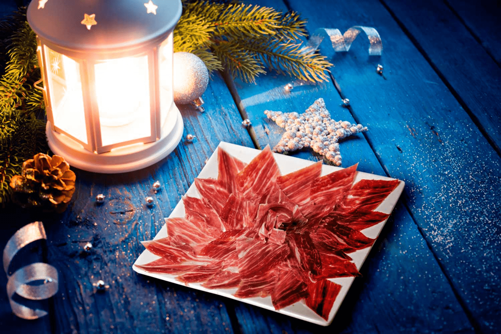
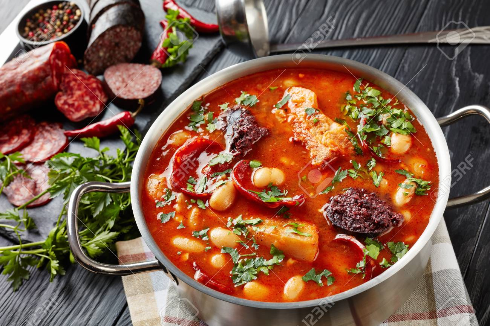
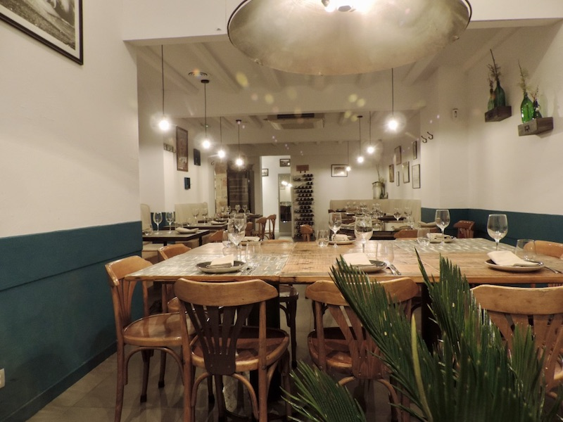

Article du jour
Voir les articles plus récents

10 décembre 2019
Bellota Bellota, Serrano , Iberico, Jabugo ...
Recettes
Voir tout
10 décembre 2019
Bellota Bellota, Serrano , Iberico, Jabugo ...

12 décembre 2019
Fabada Asturiana, le cassoulet espagnol

14 décembre 2019
Destination Barcelone : où manger ?
Voyages
Voir tout
10 décembre 2019
Bellota Bellota, Serrano , Iberico, Jabugo ...
je vous propose de vous régaler avec une autre recette Espagnole. si vous aimez le cassoulet il vous faut tester la fabada, le cassoulet local …
Europe
12 décembre 2019
Destination Barcelone : où manger ?
Pendant les vacances du mois de Mai, nous sommes partis une semaine en vacances en famille à Barcelone. Je ne connaissais pas cette ville …
Europe
14 décembre 2019